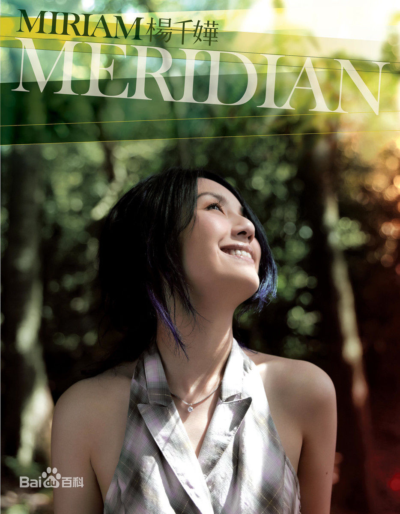

1
| 首页 | 演艺经历 | 图集 | 参演作品 | 留言 |
杨千嬅简介杨千嬅，原名杨泽嬅，1974年2月3日出生于中国香港，香港流行女歌手、影视演员，毕业于香港理工大学。 >>> 1995年参加无线电视第14届《新秀歌唱大赛》获得季军进入歌坛。2000年以《少女的祈祷》一曲获得香港乐坛四台颁奖典礼多个金曲奖项。2002年发行专辑《Miriam's Music Box》，其中歌曲《可惜我是水瓶座》成为其代表作之一。2002年、2008年与2009年三度夺得十大劲歌金曲最受欢迎女歌星。2005年凭借电影《千杯不醉》获第42届台湾电影金马奖最佳女主角提名。2011年凭借电影《抱抱俏佳人》获得第17届香港电影评论学会大奖最佳女主角。2013年凭借《春娇与志明》夺得第32届香港电影金像奖最佳女主角，2014年主演电影《五个小孩的校长》，同年推出国语单曲《色惑》。2016年，拍摄《志明与春娇》第三部《春娇救志明》 。 |
照片 |
|||
|  | |||